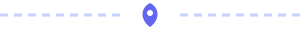

Mundo Startup
Bem-vindo ao meu site sobre startups, empresas jovens que tentam crescer rápido resolvendo um problema com tecnologia e ideias novas.

O que é uma startup
Uma startup é uma empresa nova que busca um modelo de negócio que possa ser repetido e que cresça com rapidez. Muitas delas nascem de uma ideia simples, como um aplicativo, e precisam testar se as pessoas realmente querem usá-la.
Qual é a diferença para uma empresa tradicional
Uma padaria tradicional vende bem em um bairro. Já uma startup procura escalar, isto é, atender cada vez mais clientes sem que os custos cresçam na mesma proporção.
Como uma ideia vira startup
Existe um caminho comum que a maioria das startups percorre. Os passos principais são estes:
- Identificar um problema real de um grupo de pessoas.
- Conversar com possíveis clientes para validar a ideia.
- Construir um MVP, a primeira versão simples do produto.
- Buscar investimento e crescer.
Existem startups em muitas áreas. Alguns exemplos:
- Fintechs, que trabalham com serviços financeiros.
- Edtechs, que trabalham com educação
- Plataformas de aulas on-line.
- Aplicativos de reforço escolar.
- Healthtechs, que trabalham com saúde.
- Agritechs, que trabalham com o campo.
Continue navegando
Quer entender melhor os termos do mundo das startups? Veja a página Sobre as startups. Quer apresentar uma ideia sua? Faça a inscrição no Demo Day escolar.